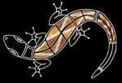

Fondée en 2007, Aboriginal Way est une association loi 1901 dont la mission est de faire découvrir et de valoriser les cultures et les traditions des peuples aborigènes d'Australie en France. À travers ses activités, ses expositions et ses événements, l'association crée des ponts entre deux mondes, invitant chacun à cheminer sur le Chemin Aborigène.
Les peuples aborigènes d'Australie sont porteurs d'une des plus anciennes traditions artistiques et culturelles au monde, vieille de plus de 60 000 ans. Leur art — souvent reconnaissable à sa technique des points (dot painting) et à ses motifs géométriques — est bien plus qu'une simple expression esthétique : il représente le Rêve (Dreaming), cet ensemble de récits mythiques qui décrivent la création du monde et régissent les relations entre les humains, les animaux et la terre.
Aboriginal Way travaille avec des artistes aborigènes australiens pour faire connaître cette création artistique en France, à travers des expositions itinérantes et des œuvres originales. Chaque tableau est une fenêtre ouverte sur un territoire, une histoire, une identité.
L'association propose une palette d'activités culturelles ouvertes à tous les publics :
Expositions d'art — Des œuvres d'artistes aborigènes australiens présentées en France, dans des galeries, des médiathèques, des écoles ou des entreprises. Chaque exposition est une invitation au voyage et à la découverte d'une culture millénaire.
Animations peinture — Des ateliers de découverte de la peinture aborigène, ouverts à tous les âges, qui initient aux techniques du point et aux symboles traditionnels. Une expérience créative et culturelle unique.
Cours de didgeridoo — L'instrument emblématique des Aborigènes d'Australie, le didgeridoo, peut s'apprendre à tout âge. Aboriginal Way propose des initiations et des cours pour découvrir le souffle circulaire et la richesse sonore de cet instrument unique au monde.
Activités culturelles — Conférences, événements et animations pour approfondir la connaissance des modes de vie, des croyances et des pratiques culturelles des communautés aborigènes contemporaines.
Aboriginal Way agit avec le souci constant de respecter les cultures qu'elle promeut. L'association veille à ce que la représentation de l'art et des traditions aborigènes soit fidèle, éthique et bienveillante envers les communautés d'origine.
Que vous soyez curieux, enseignant, responsable culturel ou simplement passionné par l'Australie et ses peuples premiers, Aboriginal Way vous ouvre les portes d'un univers fascinant. Contactez-nous pour organiser une exposition, un atelier ou une intervention dans votre établissement.